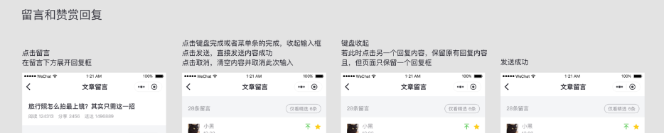

在启动开发前，首先我们对整个小程序整体的产品体验有一个清晰的规划和定义，一般会通过交互图或者手稿描绘小程序的界面交互和界面之间的跳转关系。图4-1是一个管理文章留言小程序的交互图。


图4-1 文章留言管理的交互图
紧接着，我们优先完成WXML+WXSS还原设计稿，把界面涉及到的元素和视觉细节先调试完成。
最后我们把按照页面交互梳理出每个页面的data部分，填充WXML的模板语法，还有完成JS逻辑部分。
当然并不是要完全按照这样的开发流程来开发小程序，有些时候我们可能在产品交互体验还不明确的情况下，先完成JS逻辑层一些模块的工作并做好测试。高效的开发流程有很多种方式，一般是根据整个团队的工作节奏来选择和开展，我们这一节讨论到的流程只是其中常见的开发流程。
最后一次编辑于 2019年08月19日 （未经腾讯允许，不得转载）